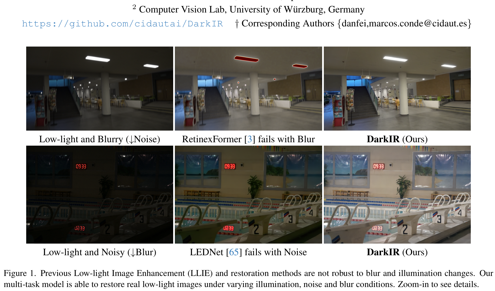
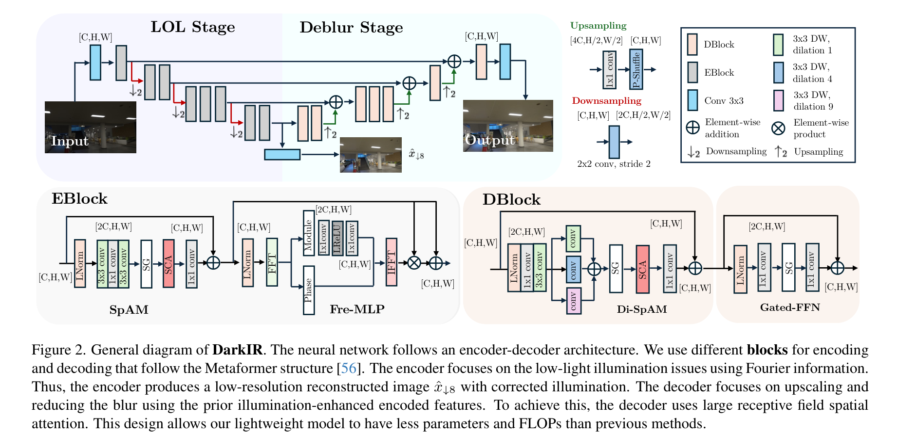
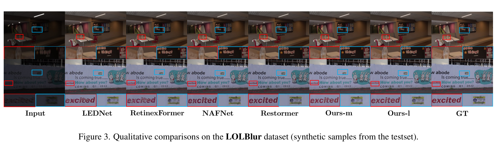
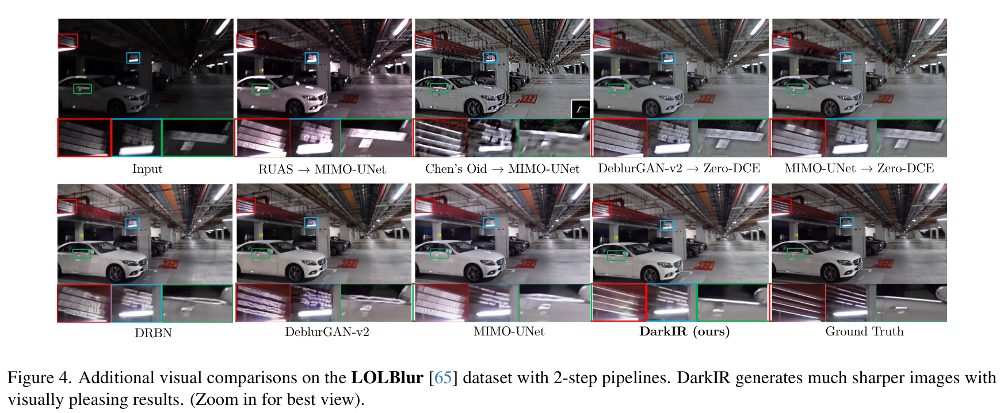
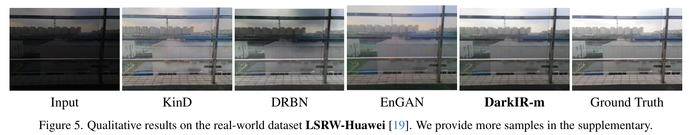
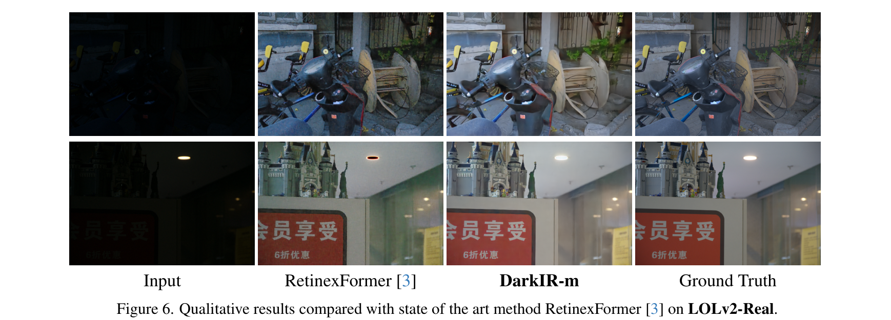
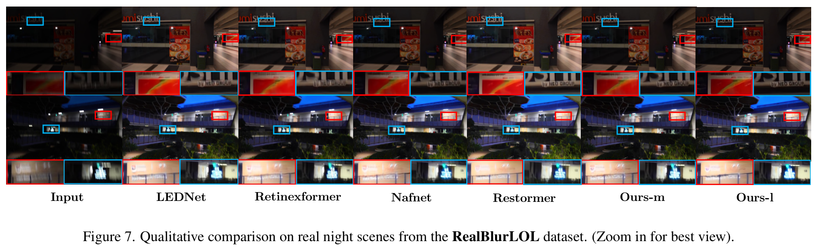

DarkIR: Phục Hồi Ảnh Thiếu Sáng Đa Nhiệm Bền Vững
DarkIR: Robust Low-Light Image Restoration
2 Computer Vision Lab, Đại học Würzburg, CHLB Đức
† Tác giả liên hệ: {danfei, marcos.conde}@cidaut.es
Chụp ảnh trong bóng đêm hoặc trong điều kiện ánh sáng cực yếu thường xuyên phải chịu đựng đồng thời ba dạng suy thoái nghiêm trọng: nhiễu cảm biến (noise), thiếu sáng (low-light) và mờ nhòe (blurring) do môi trường thiếu quang tử và việc buộc phải mở màn trập phơi sáng lâu (long exposure). Mặc dù hai bài toán Khử mờ (Deblurring) và Tăng cường ảnh thiếu sáng (Low-Light Image Enhancement - LLIE) có mối quan hệ phụ thuộc hữu cơ chặt chẽ trong các điều kiện này, hầu hết các công trình nghiên cứu phục hồi ảnh hiện nay lại tiếp cận và giải quyết chúng một cách riêng rẽ, rời rạc. Trong bài báo này, chúng tôi đề xuất một kiến trúc mạng nơ-ron sâu hiệu quả và bền vững phục vụ bài toán phục hồi ảnh thiếu sáng đa nhiệm thống nhất (multi-task low-light image restoration). Thay vì chạy theo xu hướng sử dụng các mô hình dựa trên Transformer cồng kềnh, chúng tôi đề xuất các cơ chế chú ý mới nhằm mở rộng trường tiếp nhận (receptive field) của các mạng CNN hiệu năng cao. Phương pháp của chúng tôi cắt giảm triệt để chi phí tính toán cả về số lượng tham số (Parameters) lẫn số phép tính tích lũy nhân (MAC operations) so với các giải thuật tiền nhiệm. Mô hình của chúng tôi, mang tên DarkIR, thiết lập kỷ lục State-of-the-Art (SOTA) mới trên các bộ dữ liệu chuẩn danh tiếng gồm LOLBlur, LOLv2 và Real-LOLBlur, đồng thời chứng minh khả năng tổng quát hóa vượt trội trên các bức ảnh chụp đêm thực tế ngoài đời sống.

1. Giới Thiệu (Introduction)
Trong điều kiện chụp ảnh ban đêm hoặc thiếu sáng, chúng ta có thể mô hình hóa quá trình hình thành ảnh quan sát bị suy thoái theo phương trình vật lý quang học sau:
Trong đó: $\mathbf{y}$ là bức ảnh tối mờ quan sát được thu từ thiết bị; $\mathbf{x}$ đại diện cho khung cảnh thực tế lý tưởng không bị nhiễu động; $\mathbf{k}$ đại diện cho hàm tán xạ điểm (Point-Spread Function - PSF) gây mờ nhòe ống kính do chuyển động rung lắc; $\mathbf{n}$ là thành phần nhiễu cảm biến cộng gộp; và $\gamma(\cdot)$ là hàm phi tuyến thể hiện sự kiểm soát dải động và độ bão hòa điểm ảnh (dynamic range & pixel saturation clipping). Ký hiệu $\otimes$ biểu diễn toán tử tích chập không gian hai chiều.
So với điều kiện ban ngày đầy đủ ánh sáng, khi chụp thiếu sáng, nhiễu cảm biến (bao gồm nhiễu hạt photon shot noise tuân theo phân phối Poisson và nhiễu đọc điện tử read noise tuân theo phân phối Gaussian) tăng vọt lên một cách đáng kể. Trong nhiếp ảnh ban đêm, máy ảnh thường sử dụng thời gian phơi sáng dài (tốc độ màn trập chậm) nhằm cho phép cảm biến thu nhận được nhiều quang tử ánh sáng khả dụng hơn. Tuy nhiên, việc phơi sáng kéo dài tất yếu dẫn đến các vệt bóng ma (ghosting) và hiện tượng mờ nhòe chuyển động (motion blur artifacts) do chuyển động của camera và vật thể.
Những dạng suy thoái hình ảnh này đặc biệt trầm trọng trên điện thoại thông minh (smartphones), bởi vì thiết bị di động có khẩu độ ống kính cố định và hệ thống quang học rất hạn chế về mặt kích thước vật lý. Vì những lý do này, bài toán đồng thời nâng cao độ sáng và khử mờ (joint low-light enhancement and deblurring) đóng vai trò sống còn trong lĩnh vực nhiếp ảnh tính toán di động (mobile computational photography) [12, 65] — xem các mẫu minh họa tại Hình 1.
Trong bất kỳ hoàn cảnh chụp thực tế nào, bức ảnh thu nhận luôn luôn mang một mức độ nhiễu và mờ nhất định [13]. Nếu dùng chân máy ảnh cố định (tripod) để chụp ảnh tĩnh, chúng ta có thể giảm đáng kể độ mờ. Hơn nữa, nếu có hệ thống chiếu sáng nhân tạo phù hợp, nhiễu hạt cũng có thể được kiềm chế [1, 20]. Tuy nhiên, ngày nay phần lớn các bức ảnh đều được chụp bằng tay cầm điện thoại di động (handheld smartphones). Do kích thước cảm biến và quang học siêu nhỏ, các nhà sản xuất buộc phải áp dụng các bộ xử lý tín hiệu hình ảnh (ISPs) vô cùng phức tạp [10, 12] so với các dòng máy ảnh chuyên nghiệp không gương lật (DSLM).
Chất lượng ảnh điện thoại hiện nay vẫn còn khoảng cách xa so với tiêu chuẩn máy ảnh DSLM. Rất may mắn, các nghiên cứu gần đây trong thị giác máy tính cấp thấp (low-level vision) và nhiếp ảnh tính toán đang từng bước thu hẹp khoảng cách này. Tăng cường ảnh thiếu sáng (LLIE) [3, 14, 30, 31, 45, 64], khử mờ ảnh [21, 25, 38, 40] và nâng cấp ảnh chụp đêm [42, 65] là những chủ đề thu hút sự quan tâm lớn.
Ví dụ, việc triệt tiêu hiện tượng mờ nhòe do run tay (hand tremor) đã được nghiên cứu kỹ lưỡng, ngay cả trong kịch bản ánh sáng yếu [29, 62]. Dẫu vậy, trong đa số trường hợp, các tác vụ này đều được giải quyết một cách riêng rẽ. Hệ quả là: các phương pháp khử mờ SOTA hiện nay không thể tổng quát hóa sang ảnh chụp đêm, và ngược lại, các phương pháp tăng sáng tốt nhất cũng không thể làm giảm được các vệt mờ nhòe nghiêm trọng. Đây là một hạn chế mang tính hệ thống, bởi vì người dùng sẽ phải tinh chỉnh, lưu trữ và thực thi nối tiếp nhiều mô hình chuyên biệt cho từng tác vụ (sequential cascading), gây cản trở lớn khi triển khai vào các ứng dụng thực tế thế giới thực.
Theo hiểu biết tốt nhất của chúng tôi, có rất ít công trình nghiên cứu hướng tới việc giải quyết đồng thời cả ba bài toán (khử nhiễu, khử mờ và tăng sáng thiếu sáng) theo phương pháp đầu-cuối tích hợp (joint end-to-end manner) [6, 33, 63, 65], trong đó nổi bật nhất là công trình LEDNet [65]. Chúng tôi tập trung vào hướng nghiên cứu này, bởi vì việc khai thác mối tương quan bản chất giữa các dạng suy thoái cho phép chúng tôi đạt được hiệu năng cao nhất về độ trung thực tái tạo ảnh, tính khả dụng và hiệu quả tính toán.
Đóng Góp Khoa Học Của Bài Báo (Contributions)
Chúng tôi đề xuất một mạng nơ-ron tích chập (CNN) hoạt động đồng thời trên cả hai miền: miền không gian (spatial domain) và miền tần số (frequency domain):
- Trong miền không gian, chúng tôi tập trung xử lý nhiễu cảm biến $\mathbf{n}$ và độ mờ không đồng nhất $\mathbf{k}$ bằng cơ chế chú ý không gian trường tiếp nhận cực lớn (large receptive field spatial attention).
- Trong miền tần số Fourier, chúng tôi giải quyết bài toán thiếu sáng một cách dễ dàng và tự nhiên [28, 44] nhờ vào bản chất toàn cục (global nature) của sự phân bố năng lượng chiếu sáng.
Chúng tôi tóm tắt 3 đóng góp khoa học chính như sau:
- Thiết kế một mạng nơ-ron gọn nhẹ kết hợp hài hòa cơ chế chú ý miền tần số (frequency attention) và cơ chế chú ý trường nhìn rộng (large receptive field attention), tận dụng tối đa thông tin tương hỗ giữa hai miền.
- Mô hình DarkIR thiết lập kỷ lục SOTA mới trên các bộ dữ liệu danh tiếng LOLBlur và Real-LOLBlur [65], cải thiện hơn +1.0 dB PSNR so với mô hình tiền nhiệm tốt nhất LEDNet [65], trong khi cắt giảm đáng kể chi phí tính toán phần cứng (ít hơn 55% tham số và 4x ít hơn GMACs).
- DarkIR đại diện cho một mô hình đối chuẩn (baseline) mới đầy mạnh mẽ cho bài toán phục hồi ảnh chụp đêm đa nhiệm.
2. Các Công Trình Liên Quan (Related Work)
2.1 Khử Mờ Ảnh (Image Deblurring)
Cộng đồng khoa học đã trải qua hàng thập kỷ nghiên cứu về việc tái tạo các khung cảnh sắc nét. Các giải thuật khử mờ được chia thành hai nhánh chính: phương pháp không mù (non-blind) và phương pháp mù (blind). Trong khi phương pháp không mù đòi hỏi phải biết trước kernel mờ $\mathbf{k}$ (hoặc PSF) để tiến hành giải tích chập (deconvolution), các phương pháp mù không có bất kỳ thông tin tiên nghiệm nào về quá trình gây mờ.
Những năm gần đây, nhiều kiến trúc học sâu đã được đề xuất cho cả hai bài toán [25, 38], vượt qua hoàn toàn các thuật toán cổ điển. Các mô hình học sâu không cần ước lượng PSF phức tạp và có tính chất bất khả tri thiết bị (sensor-agnostic), nghĩa là có thể tăng cường trực tiếp ảnh sRGB chụp từ nhiều cảm biến máy ảnh khác nhau. Đa phần các phương pháp hiện đại dựa trên CNN [4, 25, 37, 57], GANs (DeblurGAN [25]), Transformer miền tần số [24], hay mô hình Diffusion [33, 49].
2.2 Tăng Cường Ảnh Thiếu Sáng (LLIE)
Các phương pháp ban đầu dựa trên thống kê ảnh hoặc thông tin tiên nghiệm [2, 18], hầu hết dựa trên Lý thuyết Retinex (Retinex Theory) [26] phân rã ảnh thành thành phần phản xạ (reflectance) và thành phần chiếu sáng (illumination). Bước sang kỷ nguyên học sâu, các mô hình CNN như RetinexNet [48], Zero-DCE [16] và SCI [35] chiếm ưu thế. Gần đây, các mô hình Vision Transformer như RetinexFormer [3] hoặc các mạng khai thác thông tin biên độ Fourier như FourLLIE [44] tiếp tục đẩy cao giới hạn chất lượng.
2.3 Khử Mờ Trong Điều Kiện Thiếu Sáng (Low-Light Blur Enhancement)
Mặc dù hai bài toán trên thu hút sự chú ý độc lập rất lớn, việc giải quyết đồng thời cả hai bài toán cùng một lúc là một thách thức kỹ thuật cực khó, và chỉ có số ít công trình tiếp cận [6, 33, 63, 65]. NBDN [6] đề xuất mạng không mù để xử lý ảnh đêm bão hòa. Với LEDNet [65], nhóm tác giả đã xây dựng mạng Encoder-Decoder và giới thiệu hai bộ dữ liệu chuẩn quy mô lớn là LOLBlur và Real-LOLBlur. DarkIR kế thừa và khắc phục toàn diện các điểm nghẽn của LEDNet.

3. Phương Pháp Đề Xuất (Method)
Chúng tôi dựa trên triết lý thiết kế MetaFormer [56] để xây dựng mạng nơ-ron của mình. Thiết kế này trừu tượng hóa các kiến trúc dựa trên Transformer thành các khối đơn giản gồm hai thành phần cốt lõi: module chú ý toàn cục (global attention / token mixer) và mạng truyền thẳng (Feed-Forward Network - FFN / MLP). Công thức điển hình của MetaFormer là:
Trong đó $z$ là đặc trưng đầu vào và $z_2$ là đặc trưng đầu ra của khối. Hầu hết các mô hình phục hồi ảnh hàng đầu như NAFNet [7] đều áp dụng cấu trúc này. Chúng tôi nâng cấp MetaFormer bằng cách phát triển các khối chuyên biệt cho từng tác vụ: EBlock chuyên xử lý thiếu sáng ở Encoder, và DBlock chuyên xử lý khử mờ ở Decoder. Hơn nữa, chúng tôi sử dụng cơ chế cổng đơn giản (Simple Gates - SG) và cơ chế chú ý kênh giản lược (Simplified Channel Attention - SCA) thay thế cho các hàm kích hoạt phi tuyến tính đắt đỏ [7].
3.1 Bộ Mã Hóa Tăng Cường Ánh Sáng (Low-Light Enhancement Encoder)
Nhiều nghiên cứu quang học [28, 44] đã chứng minh rằng: điều kiện chiếu sáng của bức ảnh tương quan rất cao với phổ biên độ (amplitude) trong miền Fourier. Do đó, bằng cách chỉ kích sáng phổ biên độ của ảnh mà giữ nguyên phổ pha (phase), chúng ta có thể điều chỉnh mức sáng của toàn bộ bức ảnh một cách tự nhiên mà không làm biến dạng đường nét hình học. Đặc tính này bảo toàn qua nhiều thang độ phân giải khác nhau [28].
Vì vậy, khối EBlock bao gồm hai thành phần: Module chú ý không gian (Spatial Attention Module - SpAM) và Mạng nơ-ron miền tần số (Frequency MLP - Fre-MLP). SpAM sử dụng khối inverted residual kết hợp SCA và Simple Gate.
Tiếp theo, phép biến đổi Fourier nhanh 2D (2D-FFT) chuyển đặc trưng sang miền phức:
Chúng tôi tách riêng phổ biên độ $|X| = \sqrt{X_R^2 + X_I^2}$ và đưa qua Fre-MLP gồm hai lớp tích chập $1 \times 1$ kết hợp hàm kích hoạt LReLU. Phép biến đổi Fourier ngược (IFFT) sau đó đưa đặc trưng trở lại miền không gian. Nhờ việc giảm tỷ lệ không gian qua tích chập có bước nhảy (strided convolution), chúng tôi có thể xếp chồng nhiều khối EBlock ở các tầng sâu mà không làm bùng nổ số phép toán. Tại đáy bộ mã hóa, một lớp tích chập tạo ra ảnh tái tạo thu nhỏ $\hat{x}_{\downarrow 8}$ có kích thước bằng $1/8$ ảnh gốc nhưng đã được cân bằng mức sáng hoàn hảo.
3.2 Bộ Giải Mã Khử Mờ (Deblurring Decoder)
Khối giải mã DBlock tập trung vào các phép biến đổi hình học trong miền không gian. Đầu vào của Decoder là biểu diễn sâu của $\hat{x}_{\downarrow 8}$, do đó Decoder có thể tập trung hoàn toàn vào việc: (1) nâng độ phân giải (upsampling) và (2) triệt tiêu các vệt mờ nhòe, khôi phục độ sắc nét gờ cạnh. Cấu trúc DBlock tuân theo:
Lấy cảm hứng từ Large Kernel Attention (LKA) [17], chúng tôi sáng tạo ra module Di-SpAM (Dilated-Spatial Attention Module). Khác với LKA, Di-SpAM trích xuất đặc trưng ở ba cấp độ song song bằng ba nhánh tích chập sâu (Depth-wise Convolutions) với hệ số giãn nở lần lượt là $d = 1, 4, 9$. Các thuộc tính từ 3 nhánh được cộng gộp, đi qua lớp chú ý kênh SCA và cuối cùng kết hợp với mạng Gated-FFN.
3.3 Hàm Mất Mát Tối Ưu Hóa (Loss Function)
Chúng tôi kết hợp hài hòa giữa hàm mất mát độ trung thực (distortion loss) và hàm mất mát cảm nhận tri giác (perceptual loss) để tối ưu hóa mô hình $f$:
- Hàm mất mát điểm ảnh $L_{l1} = \|x - \hat{x}\|_1$ đảm bảo độ chính xác mức xám cao nhất.
- Hàm mất mát cảm nhận $L_{percep} = \text{LPIPS}(x, \hat{x})$ tính khoảng cách đặc trưng VGG19 [43] giữa ảnh sinh ra và ảnh tham chiếu:
$$L_{percep} = \text{LPIPS}(x, \hat{x})$$(7)
- Hàm mất mát Gradient biên cạnh $L_{edge}$ phạt nặng sai số tại các đường nét tần số cao:
$$L_{edge} = \|\nabla x - \nabla \hat{x}\|_2^2$$(8)
- Hàm mất mát định hướng kiến trúc tầng đáy $L_{lol}$ ép Encoder phải thực hiện đúng chức năng tăng sáng ở mức độ phân giải thu nhỏ:
với $\hat{x}_{\uparrow 8}$ là ảnh nội suy song tuyến tính phóng to 8 lần từ đầu ra tầng đáy Encoder.$$L_{lol} = \|x - \hat{x}_{\uparrow 8}\|_1 + \text{LPIPS}(x, \hat{x}_{\uparrow 8})$$(9)
Hàm mất mát tổng hợp toàn diện là:
Các hệ số trọng số thực nghiệm được thiết lập lần lượt là $\lambda_p = 1$, $\lambda_{pe} = 10^{-2}$ và $\lambda_{ed} = 50$.
4. Kết Quả Thực Nghiệm & Đối Chuẩn (Experimental Results)
4.1 Các Bộ Dữ Liệu Thực Nghiệm (Datasets)
- LOLBlur [65]: Gồm 10,200 cặp ảnh huấn luyện và 1,800 cặp ảnh kiểm thử tổng hợp mô phỏng chính xác mờ nhòe chuyển động và nhiễu cảm biến thực tế.
- Real-LOLBlur [65]: Tập kiểm thử gồm 482 ảnh chụp đêm thực tế từ RealBlur [40], chụp bằng tay, không có Ground Truth, dùng để đo lường khả năng tổng quát hóa thực tế.
- LOLv2 (Real & Synthetic) [55]: Bản mở rộng của tập LOL nổi tiếng, gồm 689 cặp train / 100 test (Real) và 900 train / 100 val (Synthetic).
- LSRW [19]: Gồm ảnh từ máy ảnh chuyên nghiệp Nikon (3,150 train, 20 test) và điện thoại thông minh Huawei (2,450 train, 30 val).
| Phương Pháp | PSNR (dB) ↑ | SSIM ↑ | LPIPS ↓ | Params (M) ↓ | MACs (G) ↓ |
|---|---|---|---|---|---|
| KinD++ [61] | 21.26 | 0.753 | 0.359 | 1.20M | 34.99G |
| DRBN [54] | 21.78 | 0.768 | 0.325 | 0.60M | 48.61G |
| DeblurGAN-v2 [25] | 22.30 | 0.745 | 0.356 | 60.90M | - |
| MIMO-UNet [8] | 22.41 | 0.835 | 0.262 | 6.80M | 67.25G |
| NAFNet [9] | 25.36 | 0.882 | 0.158 | 12.05M | 12.30G |
| LEDNet [65] (SOTA Cũ) | 25.74 | 0.850 | 0.224 | 7.40M | 38.65G |
| RetinexFormer [3] | 26.02 | 0.887 | 0.181 | 1.61M | 15.57G |
| Restormer [57] | 26.72 | 0.902 | 0.133 | 26.13M | 144.25G |
| DarkIR-m (Ours) | 27.00 | 0.883 | 0.162 | 3.31M | 7.25G |
| DarkIR-l (Ours) | 27.30 | 0.898 | 0.137 | 12.96M | 27.19G |

| Cấu Hình Pipeline Ghép Nối | Loại Quy Trình | PSNR (dB) ↑ | SSIM ↑ | LPIPS ↓ |
|---|---|---|---|---|
| Zero-DCE [16] → MIMO [8] | 1. LLIE → Deblurring | 17.68 | 0.542 | 0.510 |
| RUAS [30] → MIMO [8] | 1. LLIE → Deblurring | 17.81 | 0.569 | 0.523 |
| RetinexFormer [3] → NAFNet [7] | 1. LLIE → Deblurring | 17.16 | 0.673 | 0.392 |
| Chen [5] → Zero-DCE [16] | 2. Deblurring → LLIE | 17.02 | 0.502 | 0.516 |
| DeblurGAN-v2 [25] → Zero-DCE [16] | 2. Deblurring → LLIE | 18.33 | 0.589 | 0.476 |
| MIMO [8] → Zero-DCE [16] | 2. Deblurring → LLIE | 17.52 | 0.570 | 0.498 |
| NAFNet [7] → RetinexFormer [3] | 2. Deblurring → LLIE | 14.66 | 0.500 | 0.465 |
| DarkIR-m (Ours) | Tích Hợp Đầu-Cuối (End-to-End) | 27.00 | 0.883 | 0.162 |

| Phương Pháp | PSNR (dB) ↑ | SSIM ↑ |
|---|---|---|
| RetinexNet [47] | 15.906 | 0.3725 |
| FIDE [51] | 17.669 | 0.5485 |
| DRBN [54] | 16.149 | 0.5422 |
| KinD [61] | 16.472 | 0.4929 |
| EnGAN [22] | 16.311 | 0.4697 |
| Zero-DCE [16] | 15.834 | 0.4664 |
| RUAS [30] | 14.437 | 0.4276 |
| SCI [35] | 15.017 | 0.4846 |
| DarkIR-mt (Ours Multi-Task) | 18.930 | 0.5830 |
| Phương Pháp | MACs (G) ↓ | Params (M) ↓ | LOLv2-Real PSNR ↑ | LOLv2-Real SSIM ↑ |
|---|---|---|---|---|
| UFormer [46] | 12.00G | 5.29M | 18.82 | 0.771 |
| RetinexNet [47] | 587.47G | 0.84M | 15.47 | 0.567 |
| EnGAN [22] | 61.01G | 114.35M | 18.23 | 0.617 |
| DRBN [54] | 48.61G | 5.27M | 20.29 | 0.831 |
| Restormer [57] | 144.25G | 26.13M | 19.94 | 0.827 |
| FourLLIE [44] | 5.80G | 0.12M | 21.60 | 0.847 |
| RetinexFormer [3] | 15.57G | 1.61M | 22.80 | 0.840 |
| DarkIR-mt (Ours) | 7.25G | 3.31M | 23.87 | 0.880 |


| Phương Pháp | MUSIQ ↑ (Càng cao càng tốt) | NRQM ↑ (Càng cao càng tốt) | NIQE ↓ (Càng thấp càng tốt) |
|---|---|---|---|
| RUAS → MIMO | 34.39 | 3.322 | 6.812 |
| MIMO → Zero-DCE | 28.36 | 3.697 | 6.892 |
| RetinexFormer [3] | 45.30 | 5.281 | 4.576 |
| NAFNet [9] | 50.22 | 4.940 | 5.123 |
| LEDNet [65] | 39.11 | 5.643 | 4.764 |
| Restormer [57] | 46.60 | 4.627 | 5.268 |
| DarkIR-m (Ours) | 48.36 | 4.983 | 4.998 |
| DarkIR-l (Ours) | 48.79 | 4.917 | 5.051 |

5. Phân Tích Độ Lệch Chuyên Sâu (Ablation Studies)
| Cấu Hình Thử Nghiệm | Params (M) ↓ | MACs (G) ↓ | PSNR (dB) ↑ | SSIM ↑ |
|---|---|---|---|---|
| EBlock thay bằng NAFBlock | 3.12M | 7.69G | 26.51 | 0.876 |
| EBlock thêm biến đổi Pha | 4.08M | 8.38G | 26.30 | 0.871 |
| Toàn bộ mạng là DBlock | 3.20M | 8.19G | 26.68 | 0.876 |
| Toàn bộ mạng là EBlock | 3.44M | 6.46G | 26.17 | 0.863 |
| Toàn bộ mạng là NAFBlock [7] | 3.04M | 7.29G | 26.24 | 0.868 |
| DBlock thay bằng NAFBlock | 3.24M | 6.84G | 26.23 | 0.864 |
| DBlock bỏ Depthwise mở rộng | 3.27M | 6.99G | 26.63 | 0.875 |
| DarkIR-m (Đầy đủ cấu hình) | 3.31M | 7.25G | 26.90 | 0.874 |
| Cơ Chế Chú Ý Không Gian | Params (M) ↓ | MACs (G) ↓ | PSNR (dB) ↑ | SSIM ↑ |
|---|---|---|---|---|
| Large Kernel Attention (LKA) [17] | 4.06M | 9.14G | 26.45 | 0.876 |
| Di-SpAM (DarkIR-m Đề xuất) | 3.31M | 7.25G | 27.00 | 0.883 |
| Phiên Bản DarkIR | Số Kênh | Params (M) ↓ | MACs (G) ↓ | PSNR (dB) ↑ | SSIM ↑ |
|---|---|---|---|---|---|
| DarkIR-s (Bản siêu nhẹ) | 16 | 0.872M | 2.04G | 26.15 | 0.857 |
| DarkIR-m (Bản tiêu chuẩn) | 32 | 3.31M | 7.25G | 27.00 | 0.883 |
| DarkIR-l (Bản hiệu năng cao) | 64 | 12.96M | 27.19G | 27.30 | 0.898 |
5. Thảo Luận Về Hiệu Quả Tính Toán & Giới Hạn
Nhờ thiết kế khối EBlock và DBlock chuyên biệt, DarkIR giảm tới 55% tham số so với SOTA cũ LEDNet [65] và 88% tham số so với Restormer [57]. Về độ phức tạp phép tính trên ảnh $256 \times 256$, LEDNet tiêu tốn 33.74 GMACs và Restormer tiêu tốn 141.24 GMACs, trong khi DarkIR chỉ tiêu tốn 7.25 GMACs — tương đương mức cắt giảm 4 lần so với LEDNet và gần 20 lần so với Restormer!
Giới hạn của mô hình (Limitations): Mặc dù DarkIR giảm thiểu rất nhiều phép toán, mô hình sử dụng nhiều lớp tích chập sâu (Depth-wise Convolutions). Trên một số kiến trúc GPU nhất định, Depth-wise Convolutions có cường độ số học (arithmetic intensity) thấp [15], dẫn đến việc thời gian thực thi (latency) không giảm tuyến tính tuyệt đối theo mức giảm của GMACs.
6. Kết Luận & Định Hướng Đồ Án Cao Học UIT
DarkIR đã chứng minh rằng một mạng CNN phân cấp bất đối xứng, phối hợp miền không gian trường nhìn rộng và miền tần số Fourier, có thể đánh bại các mô hình Vision Transformer khổng lồ trên bài toán phục hồi ảnh thiếu sáng chụp đêm, mở ra giải pháp tối ưu cho các thiết bị có tài nguyên phần cứng giới hạn.
Đối với Đồ án môn học CS2203 của chúng ta tại UIT, những bài học load-bearing được rút ra và kế thừa trực tiếp bao gồm:
- Chống rò rỉ nhiễu qua Skip Connections: Đặt lớp cổng chọn lọc (gating) trước khi truyền đặc trưng sang Decoder.
- Hàm mất mát Composite: Kết hợp bắt buộc $L_1$ + SSIM + Gradient Edge Loss để giữ độ sắc nét biên.
- Kiến trúc Compact U-Net: Giữ số lượng tham số dưới 1.5M params, đảm bảo chạy mượt mà trên môi trường tính toán thực tế.